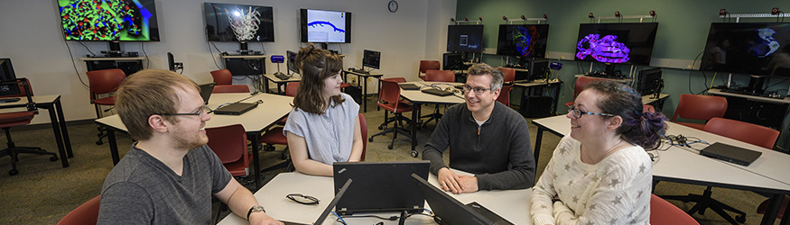
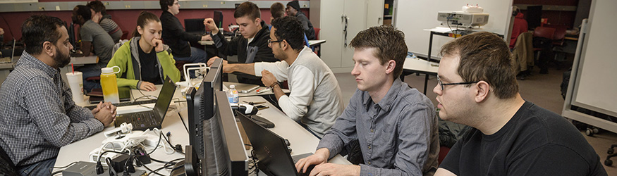
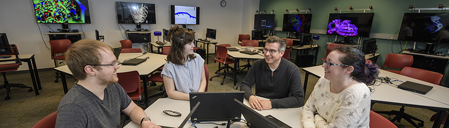
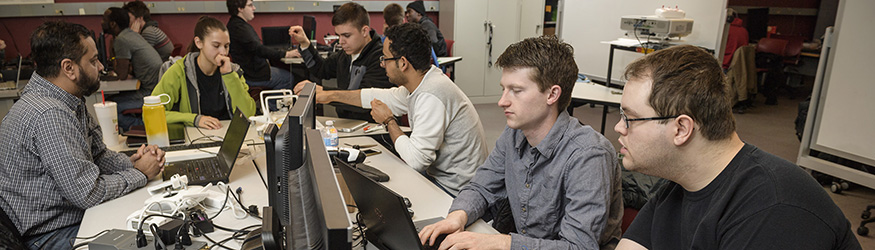

click on an image to change it
Welcome to the online hub of the Computer Science and Engineering Club at Wright State University! We are thrilled to present a digital space that mirrors the dynamic and collaborative spirit of our club. As a community of tech enthusiasts, aspiring engineers, and coding aficionados, we strive to create an inclusive environment where innovation thrives. Navigate through our site to discover the latest in technological advancements, upcoming events, and opportunities to connect with fellow students who share your passion for the ever-evolving world of computer science and engineering.
At the heart of our club is a commitment to providing a platform for personal and professional growth. Engage in hands-on projects, participate in coding competitions, and attend workshops hosted by industry experts. Whether you're a seasoned programmer or just dipping your toes into the tech landscape, the Computer Science and Engineering Club at Wright State University is here to inspire, educate, and connect. Join us on this virtual journey, where your curiosity is ignited, and your potential is limitless. Welcome to a community that celebrates the future of technology and the boundless possibilities it holds.